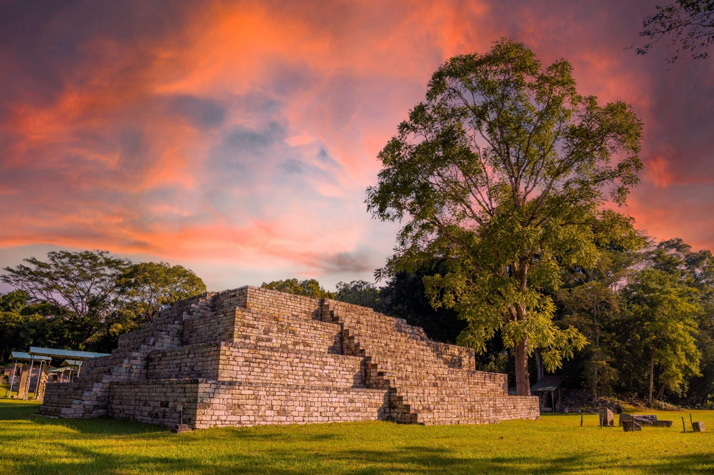
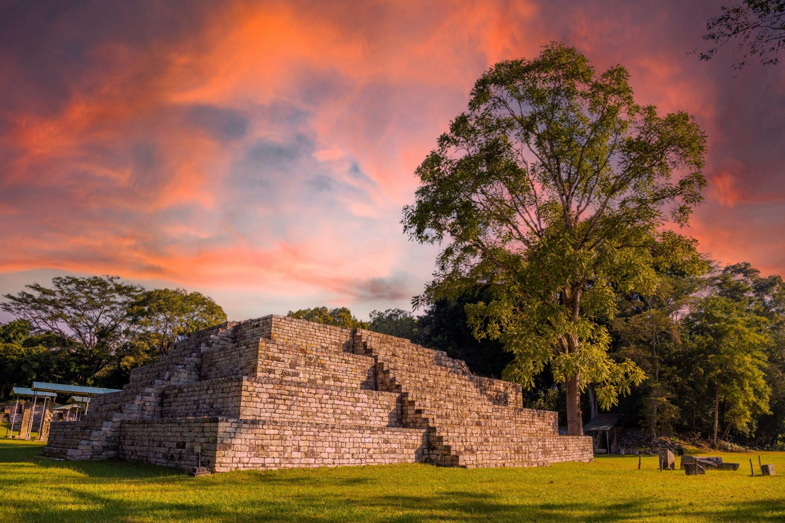

La República de Honduras cuenta con varios monumentos históricos fruto de la herencia del pasado indígena precolombina, colonial española y de la época republicana. La ley para la Protección del Patrimonio Cultural de Honduras, considera que forma parte del patrimonio cultural de Honduras las siguientes categorías: Los monumentos, bienes muebles, lugares la expresión folclórica. El organismo encargado es el Instituto Hondureño de Antropología e Historia con personería jurídica y patrimonio propio que tiene como mandato “la defensa, exploración, conservación, restauración, reparación, recuperación y acrecentamiento e investigación científica de los tesoros arqueológicos, antropológicos, históricos y artísticos.
Iglesia Inmaculada Concepción
Sin duda alguna es una de las iglesias más visitadas de Honduras, esta ubicada en la antigua capital de nuestro país, Comayagua. Muchos turistas y devotos son fieles a la imagen de Santa María. La fachada principal de la Catedral, fue terminada por el Obispo Pérez Carpintero en el año 1704 e inaugurada hasta el año 1711. Este monumento, tiene en un cuerpo, al costado de la entrada principal, la maquinaria del reloj considerado mas antiguos de América en funcionamiento.
Parque Arqueológico Copán Ruinas
Este es uno de los monumentos históricos más conocido de Honduras. La palabra Copán, proviene posiblemente del nahuátl «copantl«, cuyo significado es Puente. Declarado Patrimonio Arqueológico de la Humanidad por la UNESCO en 1980, el sitio alberga la escalinata de jeroglíficos más importante y extensa de Mesoamérica. De los sitios más visitados año con año debido a la majestuosidad que muestra en sus estructuras, estelas mayas y muchos otros vestigios encontrados en esta zona de Copán.
 

Basílica de Nuestra Señora de Suyapa
La Basílica de Nuestra señora de Suyapa, es una basílica católica de Tegucigalpa, considerado desde el 23 de marzo de 1993 uno de los monumentos importantes de Honduras. Es la máxima construcción de la feligresía católica en la república de Honduras. En el siglo XVIII, se descubrió la imagen de la virgen de Suyapa. Fue en el año de 1925 que apareció la Virgen de Suyapa, declarada patrona de Honduras por el pontífice Pío XII.
Monumento El Obelisco Centenario
Monumento El Obelisco del centenario, considerado uno de los sitios más referentes de Comayagüela. En el año 2021 cumple 100 años desde su inauguración. El Obelisco, fue construido en 1921 por orden del presidente, de ese entonces Rafael López Gutiérrez, con el objetivo de conmemorar los 100 años de independencia de Centroamérica. Lo puedes encontrar al final al extremo sur de la Calle Real de Comayagüela. Es una excelente oportunidad si tienes la voluntad de de transportarte y disfrutar de esta gran experiencia
Según la Protección del Patrimonio Cultural de Honduras, los monumentos históricos no solamente son edificios. De igual modo, los bienes muebles también lo son, debido a los grabados, pinturas, esculturas, mobiliario, joyería, maquinaria, etc. También los lugares que aglutinan las obras del hombre y de la naturaleza como los sitios arqueológicos y lugares típicos, que tengan valor desde el punto de vista antropológico, histórico, estético y turístico. La expresión folclórica no puede quedar fuera, pues representan a la pureza del nombre indígena del pueblo hondureño. Esta expresión se manifiesta en las artesanías e industrias populares y la cultura tradicional de las comunidades indígenas y de las poblaciones de reconocido sello colonial.